신재생에너지발전설비기사(구) (2017-03-05 기출문제)
1과목: 임의 구분
1. 옴의 법칙에서 전류의 크기는 어느 것에 비례하는가?
- 임피던스
- 전선의 길이
- 전선의 단면적
- 전선의 고유저항
(정답률: 82%)

2. 3kW 인버터의 입력범위가 25~35V이고, 최대 출력에서 효율이 89%이다. 최대정격에서 인버터의 최대입력 전류는 약 몇 A 인가?
- 96
- 113
- 124
- 135
(정답률: 66%)
3. 1 Ω·m과 동일한 단위는?
- 1 μΩ·cm
- 102Ω·mm2
- 104Ω·cm
- 106Ω·mm2/m
(정답률: 73%)
4. 연료전지 시스템의 구성요소 중 단위전지를 적층하여 모듈화한 것은?
- 스택
- 전해질
- 가스켓
- 고분자막
(정답률: 80%)
5. 뇌보호시스템 중 내부 뇌보호시스템은?
- 전지 시스템
- 수뢰부 시스템
- 인하도선 시스템
- 서지보호장치 시스템
(정답률: 68%)
6. 계통연계형 태양광발전시스템에 축전지를 부가함으로써 발생할 수 있는 장점이 아닌 것은?
- 계통전압의 안정화에 기여한다.
- 태양광발전시스템의 수명을 연장한다.
- 재해 발생 시 전력공급의 역할을 한다.
- 태양광발전시스템의 적용 범위를 확대한다.
(정답률: 72%)
7. 독립형 태양광발전설비의 전원시스템용 축전지용량 선정 시 고려사항에 해당되지 않는 것은?
- 보수율
- 설계습도
- 부조일수
- 방전심도(DOD)
(정답률: 78%)
8. 태양전지에서 직렬저항 성분이 아닌 것은?
- 기판 자체 저항
- 표면층의 면 저항
- 금속 전극 자체의 저항
- 접합의 결함에 의한 누설 저항
(정답률: 76%)
9. 태양전지 모듈과 인버터가 통합된 형태로서 태양광발전시스템 확장이 유리한 인버터 운전 방식은?
- 모듈 인버터 방식
- 스트링 인버터 방식
- 병렬운전 인버터 방식
- 중앙 집중형 인버터 방식
(정답률: 81%)
10. 단결정 실리콘 태양전지의 특징이 아닌 것은?
- 색이 검은색이다.
- 무늬가 다양하다.
- 단단하고, 구부러지지 않는다.
- 제조에 필요한 온도는 약 1400℃이다.
(정답률: 77%)
11. 태양전지 셀의 종류에서 박막형의 특징이 아닌 것은?
- 온도 특성이 강하다.
- 경정질보다 두께가 얇다.
- 결정질보다 변환 효율이 낮다.
- 동일 용량 설치 시 결정질보다 박막형이 면적을 적게 차지한다.
(정답률: 72%)
12. 태양광발전시스템의 전체성능에 영향을 미치는 인버터 효율에 관한 설명으로 가장 옳은 것은?
- 태양광 인버터의 효율은 중요하지 않다.
- 변환효율만이 시스템 성능에 영향을 미친다.
- 추적효율만이 시스템 성능에 영향을 미친다.
- 변환효율과 추적효율을 같이 고려해야 한다.
(정답률: 91%)
13. 태양전지 모듈 뒷면에 부착된 라벨에 표시되는 사항이 아닌 것은?
- 공칭 최대출력
- 공칭 개방전압
- 공칭 개방전류
- 공칭 최대출력 동작전압
(정답률: 74%)
14. 다음 설명은 인버터의 효율 중 어떤 효율에 관한 것인가?
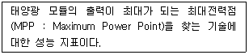
- 정격 효율
- 추적 효율
- 유로 효율
- 변환 효율
(정답률: 83%)
15. 최대전압 50V, 전압온도계수 -0.2V/℃인 결정질 태양전지 모듈 10장이 직렬연결 되어 있다. 태양전지 표면온도가 60℃일 때 최대전압은 몇 V 인가? (단, STC 조건이다.)
- 380
- 400
- 430
- 450
(정답률: 58%)
16. 확산광에 대한 설명으로 적절하지 않은 것은?
- 맑은 날의 경우 지표에 도달하는 전체 태양광의 10~20%를 차지한다.
- 확산광은 주로 대기에서의 산란에 의해 발생한다.
- 결정질 실리콘 태양전지는 확산광을 흡수하지 못한다.
- 확산광이 늘어나면 집광형 시스템의 출력은 줄어든다.
(정답률: 64%)
17. 다음은 인버터의 단독운전 검출방식 중 어떤 방식에 대한 설명인가?
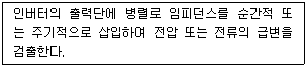
- 주파수 시프트방식
- 유효전력 변동방식
- 무효전력 변동방식
- 부하 변동방식
(정답률: 74%)
18. 동일 출력전류(I) 특성을 가지는 N개의 태양전지를 같은 일사 조건에서 서로 병렬로 연결했을 경우 출력전류 Ia 에 대한 계산식은?
- Ia = N × I
- Ia = N2 × I
- Ia = I / N
- Ia = N / I
(정답률: 79%)
19. 일반적인 GaAs 태양전지의 개방전압 (VOC)과 충진율(Fill Factor, FF) 값으로 가장 적절한 것은?
- VOC = 0.6 V, FF = 0.7 ~ 0.8
- VOC = 0.75 V, FF = 0.72 ~ 0.8
- VOC = 0.95 V, FF = 0.78 ~ 0.85
- VOC = 1.06 V, FF = 0.8 ~ 0.9
(정답률: 60%)
20. 변압기 결선방식 중 △ - △ 결선의 특징이 아닌 것은?
- 1상분이 고장 나면 나머지 2대로 V 결선할 수 있다.
- 상전압이 선간전압의 1/√3 이 되어 고전압에 적합하다.
- 제3고조파 전류에 의한 기전력 왜곡을 일으키지 않는다.
- 각 변압기의 상전류가 선전류의 1/√3 이 되어 대전류에 적합하다.
(정답률: 65%)
2과목: 임의 구분
21. 전력계통의 한 점을 직접 접지하고 설비의 노출도전성 부분을 전력계통의 접지극과 전기적으로 독립한 접지극으로 접속하는 방식은?
- TT 방식
- IT 방식
- TN 방식
- TN-S 방식
(정답률: 68%)
22. 태양전지 어레이 설계 시 그늘에 대한 검토사항 중 일반적으로 수평면에 수직으로 세워진 높이는 L , 높이가 만든 그림자의 남북방향의 길이를 LS, 태양의 높이를 h, 방위각을 α로 할 때 그림자 배율 R을 나타낸 식은?
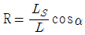
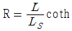
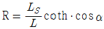
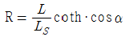
(정답률: 58%)
23. 위도가 30° 일 때 하지 시의 남중고도는?
- 36.5°
- 60.5°
- 70.5°
- 83.5°
(정답률: 63%)
24. 태양광 인버터의 용량이 40kW 일 때, 인버터에 연결될 모듈의 최대 설치 용량 [kW]은? (단, 태양광 설비 시공기준에 준한다.)
- 40
- 42
- 45
- 50
(정답률: 68%)
25. 어레이 설치 지역의 설계속도압이 1000 N/m2, 유효수압면적이 7m2인 어레이의 풍하중은 얼마인가? (단, 가스트 영향계수는 1.8, 풍압계수는 1.3을 적용한다.)
- 9.75 kN
- 13.50 kN
- 16.38 kN
- 17.55 kN
(정답률: 65%)
26. 분산형 전원 계통연계기술기준에서 전력품질에 들어가지 않는 항목은?
- 전압 관리
- 역률 관리
- 발전량 관리
- 직류 유입 관리
(정답률: 57%)
27. 시방서의 역할 및 명기사항이 아닌 것은?
- 주요 기자재에 대한 규격, 수량 및 납기일을 기재한다.
- 시공 상에 필요한 품질 및 안전관리 계획, 시공 상에서 특별히 주의해야 할 특기사항들을 포함시킨다.
- 시공 상에 필요한 기술기준을 규정하는 것으로 계약서류에 포함되는 설계도서의 일부로 법적인 구속력을 갖는다.
- 설계도면에 표시하지 못한 상세 내용 즉 공정별로 적용되는 국내외 표준기준, 시공방법, 허용오차 등의 기술적 내용을 기재한다.
(정답률: 71%)
28. 다음 내용을 나타내는 것은 무엇인가?
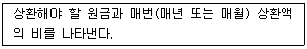
- 비용편익률
- 투자회수율
- 내부수익률
- 순현재가치율
(정답률: 57%)
29. 태양광발전시스템에서 어레이 경사면 일조량과 가장 근사한 것은?
- 전수평면일조량과 경사면 직달광선 일조량의 합
- 전수평면일조량과 경사면 산란광선 일조량의 합
- 경사면 직달광선 일조량과 경사면 산란광선 일조량의 합
- 전수평면일조량, 경사면 직달광선 일조량, 경사면 산란광선 일조량의 합
(정답률: 64%)
30. 태양광발전소 설비용량이 2500 kW, SMP가 200[원/kWh], 가중치 적용전 REC가 150[원/kWh]인 경우 판매단가 (원/kWh)는? (단, 설치장소는 기존 건축물 지붕을 이용하여 설치하는 것으로 한다.) (문제 오류로 실제 시험에서는 모두 정답처리 되었습니다. 여기서는 1번을 누르면 정답 처리 됩니다.)
- 450
- 475
- 500
- 525
(정답률: 67%)
31. 전기설계 일반사항에서 실시설계 성과물 중 공사비 견적서와 가장 거리가 먼 것은?
- 계산서
- 내역서
- 산출서
- 견적서
(정답률: 59%)
32. 태양광 발전소 설계 시 적용하는 케이블 중 가교폴리에틸렌 절연비닐시스케이블의 약어는?
- OW
- CV
- DV
- OC
(정답률: 82%)
33. 태양광발전시스템 어레이의 그림자 영향에 대한 대책이 아닌 것은?
- 모듈을 가로깔기로 배치한다.
- 인버터에 MPPT 제어기능을 추가한다.
- 모듈 후면 단자함 내 바이패스 다이오드를 설치한다.
- 스트링(모듈 직렬연결)간 블록킹 다이오드를 설치한다.
(정답률: 60%)
34. 태양광발전시스템 어레이 지지대의 조건으로 가장 거리가 먼 것은?
- 유지관리가 용이할 것
- 미관 및 조형성을 가질 것
- 태풍, 지진 등 외력에 충분히 견딜 것
- 대기환경에 충분히 비내수성을 가질 것
(정답률: 59%)
35. 표준 상태에서 태양전지 어레이의 변환효율을 산출하는 계산식으로 옳은 것은?
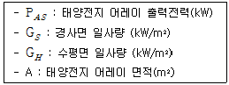
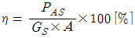
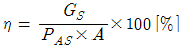
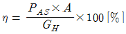
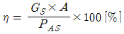
(정답률: 77%)
36. 태양전지 모듈 간의 이격거리(X)는 약 몇 m 인가? (문제 오류로 실제 시험에서는 모두 정답처리 되었습니다. 여기서는 1번을 누르면 정답 처리 됩니다.)
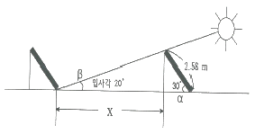
- 5.1
- 5.8
- 6.2
- 6.5
(정답률: 66%)
37. 농림지역에 태양광 발전 사업을 하려고 한다. 개발행위 대상이 되는 부지면적은 최대 몇 m2 미만 인가?
- 5000m2
- 7500m2
- 10000m2
- 30000m2
(정답률: 61%)
38. 태양광발전시스템 어레이 기초시설 중 내력벽 또는 조적벽을 지지하는 기초로 벽체 양옆에 캔틸레버 작용으로 하중을 분산시키는 기초는 무엇인가?
- 독립기초
- 연속기초
- 온통기초
- 파일기초
(정답률: 69%)
39. 태양광발전에 사용되는 축전지 선정 시 기대수명을 예상할 때 고려할 대상이 아닌 것은?
- 축전지용량
- 사용온도
- 방전심도
- 방전횟수
(정답률: 51%)
40. 태양광발전시스템에 적용하는 피뢰방식이 아닌 것은?
- 메쉬법
- 보호각법
- 회전구체법
- 바리스터법
(정답률: 65%)
3과목: 임의 구분
41. 태양광발전시스템 건설을 위한 기본 계획 흐름도가 올바른 것은?
- 현장여건분석 → 시스템설계 → 구성요소제작 → 기초공사 → 구조물설치 → 간선공사 → 모듈설치 → 인버터설치 → 시운전 → 운전개시
- 현장여건분석 → 시스템설계 → 기초공사 → 구성요소제작 → 구조물설치 → 간선공사 → 모듈설치 → 인버터설치 → 시운전 → 운전개시
- 현장여건분석 → 시스템설계 → 구성요소제작 → 기초공사 → 구조물설치 → 모듈설치 → 간선공사 → 인버터설치 → 시운전 → 운전개시
- 현장여건분석 → 시스템설계 → 구성요소제작 → 기초공사 → 구조물설치 → 모듈설치 → 인버터설치 → 간선공사 → 시운전 → 운전개시
(정답률: 58%)
42. 태양전지 모듈을 설치할 경우 시공기준에 적합하지 않은 것은?
- 모듈 전면의 음영이 최대화 되어야 한다.
- 경사각은 현장 여건에 따라 조정하여 설치할 수 있다.
- 설치용량은 사업계획서상의 모듈 설계용량과 동일하여야 한다.
- 방위각은 그림자의 영향을 받지 않는 곳에 정남향 설치를 원칙으로 한다.
(정답률: 80%)
43. 태양광 파워컨디셔너를 설치 후 역률 확인 시 출력 기본파 역률은 몇 % 이상인가?
- 85
- 90
- 93
- 95
(정답률: 50%)
44. 태양광 모듈을 지붕에 시공하고 옥내 배선공사를 케이블 트레이 공사로 시공할 경우 케이블트레이에 적용할 수 없는 전선은?
- 연피 케이블
- PVC 케이블
- 난연성 케이블
- 알루미늄피 케이블
(정답률: 49%)
45. 누전에 의한 감전과 화재 등을 방지하기 위하여 태양전지 어레이와 연결된 인버터의 출력전압이 400V 미만인 경우 몇 종 접지공사를 하여야 하는가?
- 제1종 접지공사
- 제2종 접지공사
- 제3종 접지공사
- 특별 제3종 접지공사
(정답률: 82%)
46. 감리원이 해당 공사 착공 전에 실시하는 설계도서 검토내용에 포함되지 않는 것은?
- 설계도서등의 내용에 대한 상호일치 여부
- 현장조건에 부합 및 시공의 실제가능 여부
- 설계도서의 누락, 오류 등 불명확한 부분의 존재여부
- 시공사가 제출한 물량내역서와 발주자가 제공한 산출내역서의 수량일치 여부
(정답률: 68%)
47. 다음 중 설계감리의 업무 범위가 아닌 것은?
- 사용자재의 적정성 검토
- 설계도면의 적정성 검토
- 주요인력 및 장비투입 현황 검토
- 공사기간 및 공사비의 적정성 검토
(정답률: 53%)
48. 태양광 발전설비 중 일반용의 경우 안전관리자를 선임하지 않아도 되는 용량[kW]은?
- 10 kW 이하
- 20 kW 이하
- 50 kW 이하
- 100 kW 이하
(정답률: 50%)
49. 발주청의 감독권한 대행을 제외한 행정업무, 시공관리업무, 공정관리업무, 안전관리업무를 포함하는 감리를 무엇이라고 하는가?
- 검측감리
- 시공감리
- 책임감리
- 설계감리
(정답률: 60%)
50. 피뢰기의 구비 조건이 아닌 것은?
- 방전 내량이 클 것
- 속류 차단 능력이 클 것
- 충격 방전개시 전압이 높을 것
- 상용주파 방전개시 전압이 높을 것
(정답률: 66%)
51. 태양광설비 인버터의 입력단(모듈출력)에 표시하지 않아도 되는 것은?
- 전압
- 전류
- 전력
- 주파수
(정답률: 67%)
52. 태양전지 모듈에서 인버터 입력단간 거리가 120m 이하 일 때 전선의 길이에 따른 전압강하 최대 허용치[%]는?
- 3%
- 5%
- 7%
- 10%
(정답률: 71%)
53. 태양광 모듈 설치 시 감전사고 예방대책이 아닌 것은?
- 절연장갑 착용
- 안전난간대 설치
- 태양전지 모듈 등 전원 개방
- 누전 위험장소 누전차단기 설치
(정답률: 76%)
54. 태양전지 모듈의 검사 시 성능평가 요소가 아닌 것은?
- 충진율
- 개방전압
- 전력변환효율
- 방전종지전압
(정답률: 60%)
55. 태양광발전설비의 준공검사 후 현장문서 인수인계 사항이 아닌 것은?
- 준공 사진첩
- 공사시공 계획서
- 시설물 인수인계서
- 품질시험 및 검사성과 총괄표
(정답률: 73%)
56. 감리원이 공사업자에게 행하는 기술지도 사항이 아닌 것은?
- 품질관리
- 시공관리
- 공정관리
- 운영관리
(정답률: 72%)
57. 태양전지 모듈의 배선공사가 끝나고 확인할 사항으로 옳지 않은 것은?
- 단락전류 확인
- 단락전압 확인
- 모듈의 극성 확인
- 모듈 출력전압 확인
(정답률: 59%)
58. 분산형 전원을 배전계통에 연계 시 승압용 변압기의 1차 결선방식으로 옳은 것은? (단, 인버터는 3상이며, 절연변압기를 사용하는 조건임)
- Y 결선
- △ 결선
- V 결선
- 스코트(Scott)결선
(정답률: 74%)
59. 변전소의 설치 목적이 아닌 것은?
- 전압을 승압한다.
- 전압을 강압한다.
- 전력손실을 감소시킨다.
- 계통의 주파수를 변환시킨다.
(정답률: 61%)
60. 제3종 접지공사의 접지 저항값은?
- 1 Ω 이하
- 5 Ω 이하
- 10 Ω 이하
- 100 Ω 이하
(정답률: 77%)
4과목: 임의 구분
61. 정전작업 중 조치 사항에 대한 설명 중 틀린 것은?
- 개폐기 관리
- 작업지휘자에 의한 작업지휘
- 근접 활선에 대한 방호상태 관리
- 검전기로 개로된 전로의 충전 여부 확인
(정답률: 53%)
62. 태양광발전시스템 접속함의 고장 현상과 원인의 연결로 틀린 것은?
- 어레이 단자 변형 - 누전
- 다이오드 과열 - 다이오드 불량
- 터미널 튜브 변색 - 과전류, 과열
- 부스바 과열 - 과전류, 부스바 결합상태 불량
(정답률: 67%)
63. 태양광발전용 독립형/연계형 인버터의 성능시험을 위해 사용되는 CT 등 출력계측기의 정확도 범위는?
- 1 % 이내
- 3 % 이내
- 5 % 이내
- 10 % 이내
(정답률: 53%)
64. 결정질 실리콘 태양광발전 모듈의 외관검사에 대한 설명으로 틀린 것은?
- 태양전지는 깨짐, 크랙이 없어야 한다.
- 모듈외관은 크랙, 구부러짐, 갈라짐 등이 없어야 한다.
- 500 lx 이상의 광 조사 상태에서 검사를 진행한다.
- 태양전지와 태양전지, 태양전지와 프레임의 접촉이 없어야 한다.
(정답률: 79%)
65. 태양전지 어레이의 개방전압을 측정할 때 유의해야 할 사항이 아닌 것은?
- 태양전지 어레이의 표면을 청소할 필요가 있다.
- 각 스트링의 전압은 안정된 일사강도가 얻어질 때 실시한다.
- 측정 시각은 일사강도 온도의 변동을 극히 적게 하기 위해 맑을 때 실시하는 것이 바람직하다.
- 태양이 남쪽에 있을 때의 전·후 1시간은 일사강도가 가장 높으므로 측정을 피하는 것이 좋다.
(정답률: 70%)
66. 소형 태양광 발전용 인버터의 정상 특성 시험 항목 중 독립형 인버터의 시험 항목으로 틀린 것은?
- 효율 시험
- 대기 손실 시험
- 온도 상승 시험
- 누설 전류 시험
(정답률: 51%)
67. 태양광발전시스템의 계측·표시 목적이 아닌 것은?
- 시스템의 발전량을 알기 위해 계측
- 시스템의 운영 자료를 견학자에게 제공
- 시스템의 운전상태 감시를 위한 계측 또는 표시
- 시스템의 기기 및 시스템 종합평가를 위한 계측
(정답률: 66%)
68. 태양광 발전모듈의 정기점검 시 육안점검 항목으로 옳은 것은?
- 절연저항
- 단자전압
- 투입저지 시한 타이머 동작시험
- 접지선의 접속 및 접속단자 이완
(정답률: 67%)
69. 인버터의 정기점검 항목 중 육안 항목으로 틀린 것은?(오류 신고가 접수된 문제입니다. 반드시 정답과 해설을 확인하시기 바랍니다.)
- 통풍 확인
- 접지선의 손상
- 운전 시 이상음
- 표시부 동작확인
(정답률: 41%)
70. 발전설비공사에서 철근콘크리트 또는 철골구조부의 하자담보책임기간으로 옳은 것은?
- 2년
- 3년
- 5년
- 7년
(정답률: 56%)
71. 태양광발전시스템 운전 조작 방법 중 운전 시 행해지는 조작 방법으로 틀린 것은?
- Main VCB반 전압 확인
- 한전 전원 복구 여부 확인
- DC용 차단기 On, AC측 차단기 On
- 5분 후 인버터 정상 작동 여부 확인
(정답률: 57%)
72. 태양광발전시스템이 작동되지 않을 때 응급조치 순서로 옳은 것은?
- 접속함 내부 차단기 개방 → 인버터 개방 →설비 점검
- 접속함 내부 차단기 개방 → 인버터 투입 →설비 점검
- 접속함 내부 차단기 투입 → 인버터 개방 →설비 점검
- 접속함 내부 차단기 투입 → 인버터 투입 →설비 점검
(정답률: 71%)
73. 솔라 시뮬레이터는 시험면에서 몇 W/m2 의 유효 조사 강도를 생성할 수 있어야 하는가? (단, STC 측정 목적으로 사용되도록 설계된 시뮬레이터이다.)
- 500
- 1000
- 1500
- 2000
(정답률: 78%)
74. 태양광발전시스템 점검 계획 시 고려햐야 할 사항이 아닌 것은?
- 환경 조건
- 고장 이력
- 부하 종류
- 설비의 중요도
(정답률: 53%)
75. 태양광 발전시스템에서 태양전지 스트링과 모듈의 동작불량, 직렬 접속선의 결선 누락 등을 확인하기 위한 점검 방법은?
- 일상점검
- 개방전압 측정
- 운전상황 점검
- 단락전류 확인
(정답률: 61%)
76. 태양광 발전용 파워 컨디셔너의 정격 부하 효율 결정 시 조건으로 틀린 것은?
- 부하 역률은 정격값으로 한다.
- 온도 상승 시험 이전의 값으로 한다.
- 입력 전압, 출력 전압, 전력 및 주파수는 정격값으로 한다.
- 계통 연계형인 경우 직류 쪽의 전압 또는 전류 맥동률과 교류 쪽의 전류 왜곡률은 규정된 값을 초과하지 않는 것으로 한다.
(정답률: 60%)
77. 전기용 고무장갑의 사용 범위에 대한 설명으로 틀린 것은?
- 건조한 장소에서 고압전로에 접근이 어려운 경우
- 고압 이하 충전부의 접속·절단 등을 작업할 경우
- 정전작업 시 역송전으로 선로, 기기가 단락, 접지되는 경우
- 활선상태의 배전용 지지물에 누설전류가 흐를 우려가 있는 경우
(정답률: 61%)
78. 송변전설비 유지관리 점검의 종류에서, 원칙적으로 정전을 시키고 무전압 상태에서 기기의 이상상태를 점검하고 필요에 따라서는 기기를 분해하여 점검하는 방식은 무엇인가?
- 정기점검
- 일상점검
- 수시점검
- 육안점검
(정답률: 82%)
79. 태양광 모듈 성능시험을 위한 표준 시험조건 중 최적의 온도기준(℃)은?
- 15
- 20
- 25
- 30
(정답률: 76%)
80. 사업계획서 작성에서 태양광설비 개요에 포함되어야 할 사항으로 틀린 것은?
- 집광판의 재질
- 인버터의 종류
- 인버터의 정격출력
- 태양전지의 정격용량
(정답률: 65%)
5과목: 임의 구분
81. 전기공사업자가 전기공사를 하도급 주기위하여 미리 해당 전기공사의 발주자에게 이를 알리기 위하여 작성하는 하도급 통지서에 첨부하는 서류로 틀린 것은?
- 공사 예정 공정표
- 하도급(재하도급)계약서 사본
- 하수급인 또는 다시 하도급받은 공사업자의 등록수첩 사본
- 하수급인 또는 다시 하도급받은 공사업자의 전기공사자재 보유현황
(정답률: 61%)
82. 저압전로에 사용하는 퓨즈가 견디어야 할 전류는 정격전류의 몇 배 인가? (단, IEC 표준을 도입한 과전류차단기로 저압전로에 사용하는 퓨즈는 제외한다.)
- 1.1
- 1.2
- 1.25
- 1.5
(정답률: 58%)
83. 정부가 범지구적인 온실가스 감축에 적극대응하고 저탄소 녹색성장을 효율적·체계적으로 추진하기 위하여 중장기 및 단계별 목표를 설정하고 그 달성을 위하여 필요한 조치를 강구하여야 하는 사항으로 틀린 것은?
- 에너지 판매 목표
- 에너지 자립 목표
- 온실가스 감축 목표
- 신·재생에너지 보급 목표
(정답률: 73%)
84. 다음 중 신·재생에너지에 해당되지 않는 것은?
- 풍력
- 원자력
- 연료전지
- 태양에너지
(정답률: 77%)
85. 산업통상자원부장관이 신·재생에너지 발전사업자에게 기준가격 설정을 위하여 필요한 자료를 제출할 것을 요구하였으나 거짓으로 자료를 2회 제출한 경우 행하는 조치 사항으로 옳은 것은?
- 경고
- 벌금
- 시정명령
- 발전차액의 지원중단
(정답률: 52%)
86. 산업통상자원부장관은 공급의무자가 의무공급량에 부족하게 신·재생에너지를 이용하여 에너지를 공급한 경우에는 대통령령으로 정하는 바에 따라 그 부족분에 신·재생에너지 공급인증서의 해당 연도 평균거래 가격의 얼마를 곱한 금액의 범위에서 과징금을 부과하는가?
- 100분의 30
- 100분의 50
- 100분의 100
- 100분의 150
(정답률: 65%)
87. 제1종 접지공사 시에 사용하는 접지선을 사람이 접촉할 우려가 있는 곳에 시설하는 경우 동결 깊이를 감안하여 접지극은 최소 지하 몇 cm 이상으로 매설하여야 하는가?
- 30
- 45
- 60
- 75
(정답률: 66%)
88. 저압전로에서 그 전로에 지락이 생겼을 경우에 0.5초 이내에 자동적으로 전로를 차단하는 장치를 시설한다면, 제3종 접지공사와 특별 제3종 접지공사의 접지저항 값은 자동차단기의 정격감도전류가 500mA 일 경우 최대 몇 Ω 이하이어야 하는가? (단, 물기가 있는 장소이다.)
- 30
- 50
- 75
- 150
(정답률: 48%)
89. 사용전압 35 kV 이하의 특고압 가공전선이 도로를 횡단하는 경우 지표상 높이는 최소 몇 m 이상이어야 하는가?
- 5
- 5.5
- 6
- 6.5
(정답률: 68%)
90. 전력수급의 안정을 위하여 전력수급기본계획을 수립하는 사람은 누구인가?
- 고용노동부장관
- 국토교통부장관
- 기획재정부장관
- 산업통상자원부장관
(정답률: 83%)
91. 과전류차단기를 시설하여야 하는 장소는?
- 저압옥내선로
- 접지공사의 접지선
- 다선식선로의 중성선
- 전로의 일부에 접지공사를 한 저압 가공전선로의 접지측 전선
(정답률: 70%)
92. 태양전지 모듈의 절연내역 시험 시 10분간 연속적으로 인가하는 직류전압 또는 교류전압(500 V 미만으로 되는 경우에는 500 V)은 최대사용전압의 몇 배 인가?
- 직류 1배, 교류 1배
- 직류 1배, 교류 1.5배
- 직류 1.5배, 교류 1배
- 직류 1.5배, 교류 1.5배
(정답률: 74%)
93. 사용전압이 22.9 kV인 특고압 가공전선과 그 지지물과의 이격거리는 일반적인 경우 최소 몇 m 이상인가?
- 0.2
- 0.25
- 0.3
- 0.35
(정답률: 40%)
94. 산업통상자원부장관이 전기의 보편적 공급의 구체적 내용을 정할 경우 고려하여야 할 사항으로 틀린 것은?
- 사회복지의 증진
- 전기의 보급 정도
- 개인의 이익과 안전
- 전기기술의 발전 정도
(정답률: 74%)
95. 수상전선로의 전선을 가공전선로의 전선과 육상에서 접송하는 경우 접속점의 높이는 지표상 최소 몇 m 이상인가?
- 4
- 5
- 6
- 7
(정답률: 54%)
96. 산업통상자원부령으로 정하는 신·재생에너지 공급인증서의 거래 제한 사유로 틀린 것은?
- 발전소별로 1천킬로와트를 넘는 수력을 이용하여 에너지를 공급하고 발급된 경우
- 기존 방조제를 활용하여 건설된 조력을 이용하여 에너지를 공급하고 발급된 경우
- 석탄을 액화 ·가스화한 에너지 또는 중질잔사유를 가스화한 에너지를 이용하여 에너지를 공급하고 발급된 경우
- 폐기물에너지 중 화석연료에서 부수적으로 발생하는 폐가스로부터 얻어지는 에너지를 이용하여 에너지를 공급하고 발급된 경우
(정답률: 50%)
97. 공급인증기관이 개설한 거래시장 외에서 공급인증서를 거래한 자는 최대 얼마 이하의 벌금에 처하는가?
- 1천만원
- 2천만원
- 5천만원
- 7천만원
(정답률: 56%)
98. 대통령령으로 정하는 구역전기사업자의 발전설비용량 규모는?
- 1만킬로와트
- 1만8천킬로와트
- 3만5천킬로와트
- 5만킬로와트
(정답률: 57%)
99. 정부가 에너지 절약, 에너지 이용효율 향상 및 온실가스 감축을 위하여 정보통신기술 및 서비스를 적극 활용토록 수립·시행하는 시책으로 틀린 것은?
- 새로운 정보통신 서비스의 개발 · 보급
- 방송통신 네트워크 등 정보통신 기반 확대
- 정보통신 산업을 지원하는 금융상품의 판매
- 정보통신 산업 및 기기 등에 대한 녹색기술개발 촉진
(정답률: 75%)
100. 신·재생에너지 기술개발 및 이용·보급 사업비의 조성에 따라 조성된 사업비의 용도로 틀린 것은?
- 신·재생에너지 시범사업 및 보급사업
- 신·재생에너지 설비 수출기업의 지원
- 신·재생에너지 설비의 성능평가·인증
- 신·재생에너지의 연구·개발 및 기술평가
(정답률: 75%)